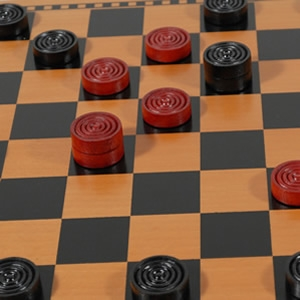

img from: www.woodexpressions.com
Go To Game Board

Fastest Win Times!
1.
2.
3.
How to Play
- Select if playing 1 player or 2 players.
- Click one of your teams pieces, then on the spot you want to move it to.
- Jump over the other teams pieces to remove them from the board.
- Win by removing all of the other teams pieces!
Rules
- Gameboard is a 8x8 table, alternating white and black squares.
- Each Team has 12 pieces. Pieces stay on black squares at all times.
- Players move their teams pieces one square at a time diagonally.
- After one move it is the other players turn to move.
- Pieces must be moved forward in all moves, unless piece is a king.
- A piece becomes a king by reaching the furthest row of the opponents
side
- A jump happens when a piece "Jumps" over an opponents piece to get
to an open square to get to the open square behind it.
- When a jump is available, the player must jump.
- The winner is the player who has caputured all the pieces of the
opposing team
External Link
Learn About
Checkers History
UPDATED: Preliminary Software Design
Variables
//Integer values used in arrays / (validate move)
//0 = White Space, (Invalid Move)(emptyspace)
//1 = Red Piece, (Valid Move)
//3 = Red Piece King
//2 = White Piece
//4 = White Piece King
- Num_Players = (1 or 2)
- UPDATED: gameboard and valid moves will be single arrays, size 64. holding values represented as above. will use loops to check values in the tables to see when moves or valid or to draw the current game map out
- StartBoard =
[0,1,0,1,0,1,0,1,
1,0,1,0,1,0,1,0,
0,1,0,1,0,1,0,1,
0,0,0,0,0,0,0,0,
0,0,0,0,0,0,0,0,
2,0,2,0,2,0,2,0,
0,2,0,2,0,2,0,2,
2,0,2,0,2,0,2,0];
- VaildMove[]; //similar array as above, mapped to show all valid moves player can make, function validate move will check this with the move player is making to see if player will be allowed to make the move
- CurrentGame[]; //similar as above, current game layout, updated after each move.
- function newGame() { //sets gameboard up for a new game. pieces in default positions, need prompt to ask if sure you want to start a new game (progress will be lost) }
- function UpdateMove() { //1.validateMove(from, to, currentgame); 2.updateGameArray(from, to); 3.updateview(currentgame); }
- function validateMove(from, to, currentgame) { if move from -> to is valid, does not hit any other pieces, then return true}
- function updateGameArray(from, to) {if validateMove was true, then make changes to game array. replace # piece with 0 and put piece on 0}
- drawcurrentBoard(currentgame) { //takes a game board array and will draw out the pieces accordaing to the 0-4 model above. }
CSS Class Names
changes to game board made throught attribute class name of object. style sheet checking
- redPC = red Piece Square
- whitePC = white piece square
- redPCKing
- whitePCKing
- black = empty black square
- white = empty white square, not valid move ever
Description of how to play.
Player will make move by clicking on a piece and moving it to a legal spot on the board.
Moving to white square will not be allowed, only able to click on black squares.
Position on board will be kept by grid number system.(2d array of ints) When object is clicked, square
is sent to first function that will make sure it contains a piece of that players
team.
Functions/Methods
- CheckPiece(position) //if CheckPiece returns true, allow player to select the square with a piece as the one to move
- CheckSquareEmpty(position) //check to see if 2nd click is an empty square, then check if the move is legal.
- CheckMove(position1,position2) //if CheckMove returns true, move is legal and game board is updated with move on HTML table
- UpdateBoard() // will update the HTML gameboard with current moves
- NewGame() // will prompt if sure want to start a new game, then set board to default settings.
- CheckWinner() //after each move check to see if either team has 0 pieces left, if no pieces left then declare a winner!